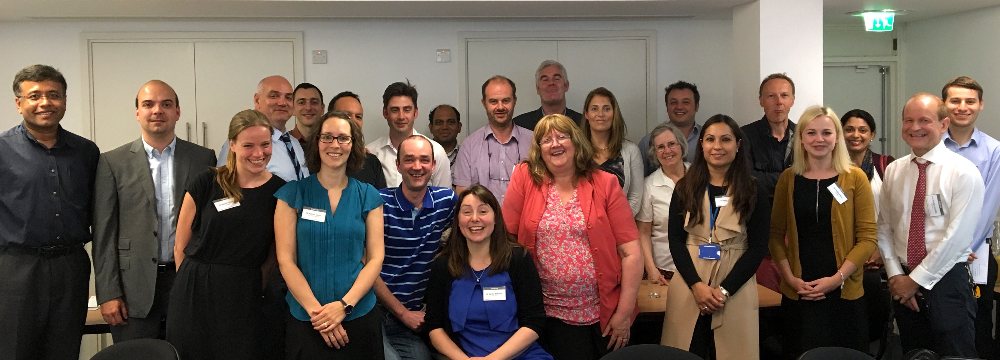

This network was established in July 2016 to foster collaborative multi-centre research in General and Adolescent Paediatric Units in the UK and Republic Of Ireland (ROI).
The focus on this network is to be able to support recruitment of patients in general paediatric studies from general paediatric departments, support local busy clinicians with research governance and project delivery, develop and direct research studies and grant applications and also nurture general paediatric trainees - the Generalists of the future.
This is a network, which will work the RCPCH research agenda, the RCPCH General Paediatric CSAC and the British Association of General Paediatricians (BAGP) as well as the CRN Child Health research network.
We also intend to collaborate where appropriate with other established networks both in the UK and Ireland such as PERUKI (www.peruki.org) and other quality improvement and audit networks such as PICANET (www.picanet.org.uk).
We will be looking for General Paediatricians around UK and Ireland to represent each region and hopefully most of the hospitals - so we will be able to focus our work on the common issues and have a generalisable study base.
So if you are a busy General Paediatrician and want to be involved in research, please join us and get involved.
Professor Alastair G Sutcliffe (Chair of GAPR-UKI)
Dr Colin Powell (Co-chair of GAPR-UKI)